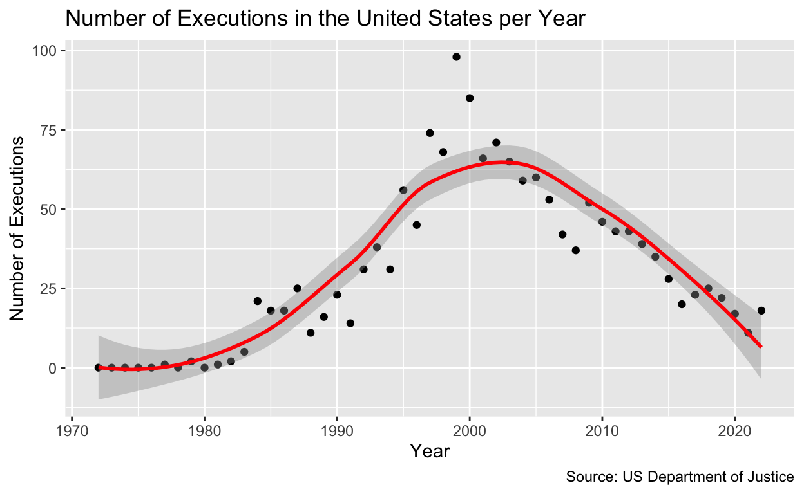
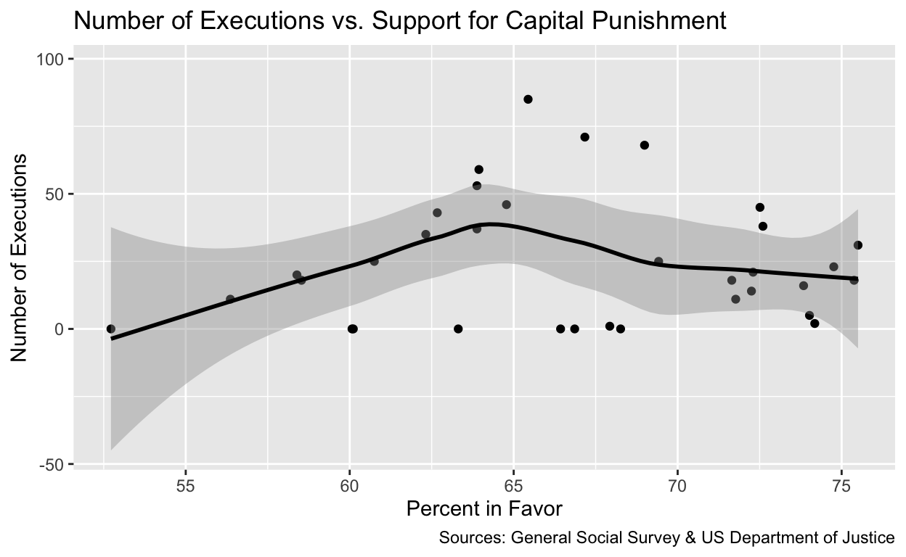
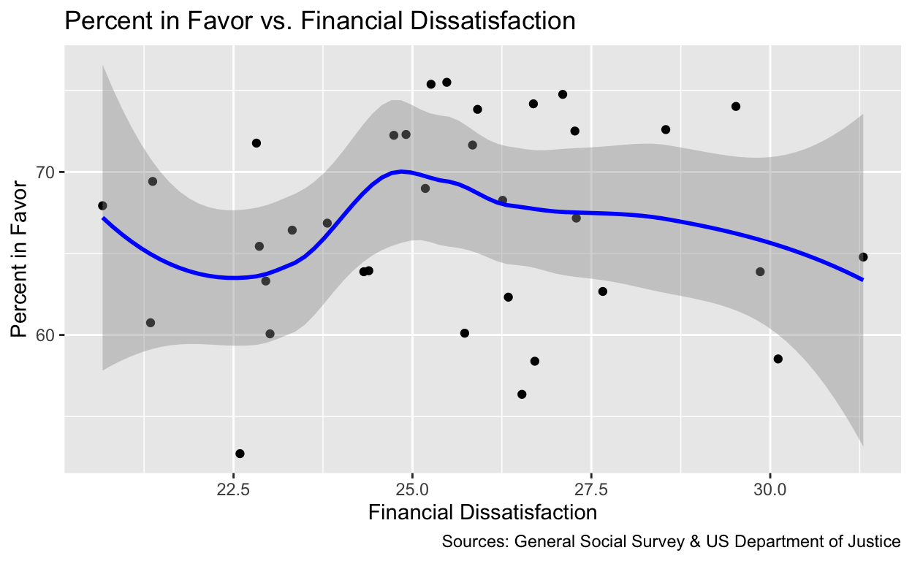

Introduction
In Furman v. Georgia (1972), the United States Supreme Court ruled that capital punishment, in its current form, was being applied in an arbitrary, capricious, and racially biased manner. Such application of capital punishment, according to the Court, constituted a “cruel and unusual punishment,” and therefore violated the 8th and 14th amendments of the US Constitution. In effect, the Furman ruling placed an indefinite moratorium on executions until states and the federal government could alter their capital statutes in a manner that no longer violated the Constitution. Four years later, in Gregg v. Georgia (1976), the Court ruled that Georgia that a handful of states’ revised statutes conformed to the standards required by Furman, thus lifting the moratorium on executions and ushering in what scholars has dubbed “the modern era of the American death penalty” (Killingley, 2008). The reinstatement of capital punishment in the Untied States was a historic anomaly, as the majority of America’s peer nations during this time period were moving to permanently abolish the death penalty (Garland, 2010). Indeed, today, the Untied States is the world’s only “western” democracy to retain its death penalty and to actively execute its citizens (Steiker & Steiker, 2016).
Both today and in the years preceding Furman v. Georgia, anti-death penalty activists have pursued a “moratorium strategy,” whereby they attempt to institute moratoriums on executions in all retentionist jurisdictions, or—if full moratoriums are not possible—to substantially lower the number of executions carried out (Zimring & Hawkins, 1986). From a historical/comparative perspective, lowering execution rates is often the first step toward achieving permanent abolition of capital punishment, as was the case in Sweden, The Netherlands, Switzerland, and Denmark (Zimring & Hawkins, 1986). Some scholars believe that that—by substantially lowering the number of annual executions—permanent abolition in the United States will become more feasible. However, there is currently relatively little literature/research on the factors that impact the number of executions carried out each year in the US. My project aims to (begin to) fill this gap. This research is important because it may help activists better focus their efforts on those factors/conditions that decrease the number of executions. It will also help scholars better understand the types of pressures to which governments and lawmakers are responsive/receptive.
To this end, I ask the following research question: Does public support for capital punishment, the homicide rate, or the number of death row exonerations impact the number of executions carried out in the United States?
The corpus of social science literature on capital punishment emphasizes that, in most democratic nations, public opinion plays a limited role in governments’ decision to abolish the death penalty. Zimring and Hawkins (1986) explain that essentially all nations that have abolished capital punishment have done so in spite of overwhelming public support for capital punishment. They also note that, after a jurisdiction abolishes capital punishment, public support for capital punishment usually begins to decrease. However, scholars warn against generalizing this trend onto the United States, as American democracy is riddled with idiosyncratic features that alter the way public opinion interacts with governance and governmental decision-making. These features include (but are not limited to) popularly elected prosecutors and judges, the frequent use of referendums and ballot initiatives, weak political parties and ‘intermediary institutions,’ the primary election system, and a federal system of government that delegates substantial power to state and local governments (Garland, 2010; Steiker, 2006). These features heighten the salience of public opinion in governmental decision-making. Therefore, there is reason to believe American lawmakers would be responsive to public opinion when it comes to capital punishment and executions. Guided by this literature, I present my first hypothesis:
H1: A high level of public support for capital punishment will increase the number of executions carried out in a given year.
For H1, my explanatory variable is the level of public support for capital punishment (measured as the percentage/proportion of survey respondents who stated that they were in favor of the death penalty as punishment for convicted murderers). My response variable is the number of executions carried out in the United States in a given year. This variable is measured simply in the raw number of individuals executed. H1 would be supported by the observation that a greater number of executions are carried out when public support for capital punishment is high compared to when public support for capital punishment is low. The following two observations would disprove H1: (1) there is no correlation between the level of public support for capital punishment and the number of executions, or (2) fewer executions are carried out when public support for capital punishment is high compared to when public support is low.
Next, Greenberg & West (2008) find that when social threats—including high rates of homicide—are present, governments are more likely to carry out executions. Similarly, Garland (2010) argues that America’s idiosyncratic retention of capital punishment is, in part, a function of the nation’s “extraordinary” rates of lethal violence. Additionally, Bright (1998) explains that, due to the pervasiveness of America’s “tough on crime” ethos, it is politically advantageous for elected officials to carry out death sentences as homicide rates increase. As such, I present a second hypothesis:
H2: As the national homicide rate increases, the number of executions will increase.
For H2, my explanatory variable is the national homicide rate, which is measured as homicides per 100,000 individuals per year. My response variable is the number of executions carried out in the United States in a given year. H2 would be supported by the observation that more executions are carried out during periods of high rates of homicide compared to periods of low rates of homicide. There are two main observations that would disprove this hypothesis: (1) there is no correlation between the homicide rate and the number of executions, or (2) the number of executions tends to be higher during periods of low rates of homicide compared to periods of high rates of homicide.
Finally, Steiker & Steiker (2012) explain that, upon adjudication of Gregg v. Georgia, the US became the “first and only one of its peer nations to move not from formal retention of the death penalty to abolition, but rather from retention to regulation.” This procedural regulation, according to Steiker & Steiker (1995), has had the “effect of legitimating the use of capital punishment as a penal sanction in the eyes of actors within the criminal justice system and the public at large.” In other words, any alteration to, or regulation of, the institution of capital punishment that gives it the appearance of being less “cruel and unusual” further legitimizes executions and entrenches the institution of capital punishment legally and socially. So, one would expect that—by giving the appearance of “correcting errors”—exonerations would act as a legitimizing force. Guided by the research of Steiker & Steiker, I have formulated a third (and final) hypothesis:
H3: A higher number of death row exonerations will lead to a higher number of executions
For H3, my explanatory variable is the number of death row exonerations (measured as the raw number of death row inmates that are exonerated in a given year). My response variable—once again—is the number of executions carried out in the United States in a given year. H3 would be supported by the observation that more executions are carried out during periods that have a high number of exonerations compared to periods of a low number of exonerations There are two main observations that would disprove this hypothesis: (1) there is no correlation between the number of exonerations and the number of executions, or (2) the number of executions tends to be higher during periods of low numbers of exonerations compared to periods of high numbers of exonerations.
Data & Research Design
The Dataset
My data does not come from a single source, as I was unable to find a dataset that contained all (or even most) of the variables I was interested in analyzing. Instead, I compiled data from five different datasets into a single excel spreadsheet, which I then converted to a .csv file. My data on the number of annual executions comes from the U.S. Department of Justice’s Bureau of Justice Statistics (BJS). The BJS database contained data for the period 1977-2022, in a dataset entitled “Prisoners Executed.” Because of the Furman v. Georgia ruling, no executions were carried out between 1972-1976; I included this data in my Excel spreadsheet. I gathered data on public support for capital punishment (along with data for the six other public opinion-based variables noted below) from the General Social Survey (GSS) database. For data on the annual national homicide rate between the years 1985-2022, I used the “Trend of Homicide from 1985 to 2022” dataset compiled by the Federal Bureau of Investigation’s “Crime Data Explorer” tool. The FBI website no longer publicly displays homicide data for years prior to 1985, so in order to find this information, I searched the Internet Archive’s Wayback Machine. There, I located an archived dataset, originally published by BJS, entitled “Homicide Trends In The United States.” From this dataset, I pulled data for the years 1972-1984. For data on the number of death row exonerations, I used the Death Penalty Information Center’s “Innocence Database,” which documents every death row exoneration in the US between 1973-2023. Full citations for these databases can be found in the “Works Cited” section of this report.
The Variables
My key independent/explanatory variable for H1 is the level of public support for capital punishment. This variable is measured as the proportion/percentage of survey respondents to answered “yes” to the question: “Do you favor or oppose the death penalty for persons convicted of murder?” My key independent/explanatory variable for H2 is the national homicide rate, which is measured as homicides per 100,000 individuals per year. This data was gathered and reported by government agencies. My key independent/explanatory variable for H3 is the number of death row exonerations, which is measured as the total number of death row inmates who are exonerated in a given year. Data on exonerations is collected and reported by government agencies. Finally, my key dependent/response variable for all three hypotheses is the number of executions carried out by the US in a given year, which is measured as the total number of prisoners executed by the United States in a given year.
Each of the variables I use to test my three hypothesis are summarized in the table below.
| Name | Description |
|---|---|
Year |
Year |
Percent_Support |
Percentage of surveyed Americans who favor the death penalty as a punishment for murder |
Number_Executions |
Number of prisoners executed in the United States |
Number_Exonerations |
Number of death row exonerations |
Homicide_Rate |
National homicide rate (measured in homicides per 100,000 individuals) |
When compiling my dataset, I included a few variables that I ultimately did not utilize while testing my three hypotheses. However, these variables—which I’ve summarized in the table below—may yield fruitful insights if analyzed in further/future research. The data for each of these variables was taken from the General Social Survey database.
| Name | Description |
|---|---|
Fin_Dissatisfaction |
Percentage of surveyed Americans who are dissatified with their overall financial situation |
Pro_Prayer_Schools |
Percentage of surveyed Americans who support Christian prayer in public schools |
Ban_IRM |
Percentage of surveyed Americans who support a ban on interracial marriage |
Insufficient_Spending_CR |
Percentage of surveyed Americans who believe the government spends too little money addressing the issue of the rising crime rate |
Distrust_SC |
Percentage of surveyed Americans who distrust the Supreme Court |
Distrust_Congress |
Percentage of surveyed Americans who distrust Congress |
Research Design Classification
My research design uses observational data and is best classified as a correlational study.
Basic Data Visualizations
I. Data Table
I loaded my .csv file into RStudio, named it “deathpenalty,” and presented my dataset in a table.
library(tidyverse)
library(dplyr)
library(broom)
library(infer)
library(modelsummary)
deathpenalty <- read_csv("deathpenalty.csv")
knitr::kable(deathpenalty)| Year | Percent_Support | Number_Executions | Number_Exonerations | Homicide_Rate | Fin_Dissatisfaction | Pro_Prayer_Schools | Ban_IRM | Insufficient_Spending_CR | Distrust_SC | Distrust_Congress |
|---|---|---|---|---|---|---|---|---|---|---|
| 1972 | 52.72 | 0 | NA | 9.0 | 22.59 | NA | 35.72 | NA | NA | NA |
| 1973 | 60.07 | 0 | 1 | 9.4 | 23.01 | NA | 36.80 | 64.27 | 15.18 | 15.33 |
| 1974 | 63.31 | 0 | 2 | 9.8 | 22.95 | 66.150 | 32.59 | 67.17 | 14.96 | 20.86 |
| 1975 | 60.11 | 0 | 5 | 9.6 | 25.73 | 60.750 | 37.46 | 65.45 | 18.42 | 25.44 |
| 1976 | 66.43 | 0 | 5 | 8.8 | 23.32 | NA | 31.70 | 66.58 | 15.42 | 26.02 |
| 1977 | 67.93 | 1 | 1 | 8.8 | 20.67 | 65.970 | 26.64 | 66.48 | 10.48 | 17.04 |
| 1978 | 66.86 | 0 | 3 | 9.0 | 23.81 | NA | NA | 64.92 | 15.01 | 21.42 |
| 1979 | NA | 2 | 1 | 9.7 | NA | NA | NA | NA | NA | NA |
| 1980 | 68.26 | 0 | 3 | 10.2 | 26.26 | NA | 29.33 | 69.23 | 19.85 | 33.48 |
| 1981 | NA | 1 | 7 | 9.8 | NA | NA | NA | NA | NA | NA |
| 1982 | 74.18 | 2 | 2 | 9.1 | 26.69 | 59.390 | 31.40 | 72.90 | 12.44 | 23.01 |
| 1983 | 74.02 | 5 | 0 | 8.3 | 29.52 | 56.488 | NA | 65.96 | 14.56 | 22.75 |
| 1984 | 72.30 | 21 | 0 | 7.9 | 24.91 | NA | 25.28 | 69.19 | 12.59 | 21.34 |
| 1985 | 75.38 | 18 | 2 | 8.0 | 25.26 | 53.500 | 27.12 | 62.66 | NA | NA |
| 1986 | 71.65 | 18 | 3 | 8.6 | 25.84 | 61.310 | NA | 63.63 | 13.84 | 19.66 |
| 1987 | 69.42 | 25 | 8 | 8.3 | 21.37 | NA | 25.34 | 69.23 | 9.95 | 17.74 |
| 1988 | 71.77 | 11 | 4 | 8.5 | 22.82 | 57.970 | 23.77 | 70.13 | 9.83 | 19.43 |
| 1989 | 73.84 | 16 | 4 | 8.7 | 25.91 | 55.580 | 20.48 | 72.49 | 9.79 | 20.72 |
| 1990 | 74.76 | 23 | 4 | 9.4 | 27.10 | 54.580 | 18.47 | 68.33 | 12.95 | 21.81 |
| 1991 | 72.25 | 14 | 3 | 9.8 | 24.74 | 57.610 | 19.17 | 65.57 | 12.48 | 25.29 |
| 1992 | NA | 31 | 1 | 9.3 | NA | NA | NA | NA | NA | NA |
| 1993 | 72.60 | 38 | 7 | 9.5 | 28.54 | 56.650 | 16.61 | 70.47 | 13.97 | 42.37 |
| 1994 | 75.50 | 31 | 1 | 9.0 | 25.48 | 58.010 | 14.72 | 76.08 | 15.76 | 39.04 |
| 1995 | NA | 56 | 5 | 8.2 | NA | NA | NA | NA | NA | NA |
| 1996 | 72.51 | 45 | 8 | 7.4 | 27.27 | 56.580 | 12.08 | 66.30 | 17.73 | 42.42 |
| 1997 | NA | 74 | 5 | 6.8 | NA | NA | NA | NA | NA | NA |
| 1998 | 68.99 | 68 | 2 | 6.3 | 25.18 | 52.530 | 12.37 | 61.13 | 14.11 | 30.57 |
| 1999 | NA | 98 | 8 | 5.7 | NA | NA | NA | NA | NA | NA |
| 2000 | 65.44 | 85 | 9 | 5.5 | 22.86 | 57.880 | 10.51 | 58.50 | 12.43 | 27.68 |
| 2001 | NA | 66 | 5 | 5.6 | NA | NA | NA | NA | NA | NA |
| 2002 | 67.17 | 71 | 5 | 5.6 | 27.29 | 55.930 | 11.90 | 55.17 | 10.03 | 25.12 |
| 2003 | NA | 65 | 12 | 5.7 | NA | NA | NA | NA | NA | NA |
| 2004 | 63.94 | 59 | 6 | 5.5 | 24.39 | 62.810 | NA | 56.93 | 15.08 | 24.83 |
| 2005 | NA | 60 | 3 | 5.6 | NA | NA | NA | NA | NA | NA |
| 2006 | 63.88 | 53 | 1 | 5.8 | 24.32 | 52.280 | NA | 59.55 | 14.48 | 33.31 |
| 2007 | NA | 42 | 3 | 5.7 | NA | NA | NA | NA | NA | NA |
| 2008 | 63.88 | 37 | 4 | 5.4 | 29.86 | 55.080 | NA | 59.19 | 13.82 | 36.79 |
| 2009 | NA | 52 | 9 | 5.0 | NA | NA | NA | NA | NA | NA |
| 2010 | 64.78 | 46 | 1 | 4.8 | 31.30 | 51.890 | NA | 58.33 | 16.08 | 40.44 |
| 2011 | NA | 43 | 1 | 4.7 | NA | NA | NA | NA | NA | NA |
| 2012 | 62.67 | 43 | 3 | 4.7 | 27.66 | 57.110 | NA | 56.69 | 15.00 | 45.30 |
| 2013 | NA | 39 | 1 | 4.5 | NA | NA | NA | NA | NA | NA |
| 2014 | 62.32 | 35 | 7 | 4.4 | 26.34 | 55.950 | NA | 58.57 | 19.75 | 51.22 |
| 2015 | NA | 28 | 6 | 4.9 | NA | NA | NA | NA | NA | NA |
| 2016 | 58.39 | 20 | 0 | 5.4 | 26.71 | 54.160 | NA | 63.55 | 18.70 | 51.76 |
| 2017 | NA | 23 | 5 | 5.3 | NA | NA | NA | NA | NA | NA |
| 2018 | 60.75 | 25 | 2 | 5.0 | 21.34 | 48.480 | NA | 65.35 | 13.94 | 45.05 |
| 2019 | NA | 22 | 3 | 5.1 | NA | NA | NA | NA | NA | NA |
| 2020 | NA | 17 | 6 | 6.5 | NA | NA | NA | NA | NA | NA |
| 2021 | 56.36 | 11 | 3 | 6.8 | 26.53 | NA | NA | 62.14 | 21.47 | 51.53 |
| 2022 | 58.53 | 18 | 2 | 6.3 | 30.11 | NA | NA | 69.14 | 35.47 | 52.54 |
II. Plots
To visualize key trends in my dataset, I first plotted the number of executions per year, both as a line graph and as a scatter plot with a smoothed trend line.
dp_plot_1 <- ggplot(data = deathpenalty,
mapping = aes(x = Year, y = Number_Executions)) +
geom_line(color = "red") +
labs(x = "Year",
y = "Number of Executions",
title = "Number of Executions in the United States per Year",
caption = "Source: US Department of Justice")
dp_plot_2 <- ggplot(data = deathpenalty,
mapping = aes(x = Year, y = Number_Executions)) +
geom_point() + geom_smooth(color = "red") +
labs(x = "Year",
y = "Number of Executions",
title = "Number of Executions in the United States per Year",
caption = "Source: US Department of Justice")
dp_plot_1dp_plot_2
Then, I plotted the key explanatory variable for each of my three hypotheses over time as both a line graph and a scatter plot with a smoothed trend line. These variables are percentage of Americans in favor of capital punishment, national homicide rate, and number of exonerations, respectively.
dp_plot_3 <- ggplot(data = deathpenalty[complete.cases(deathpenalty$Percent_Support),],
mapping = aes(x = Year, y = Percent_Support)) +
geom_line() +
labs(x = "Year",
y = "Percent in Favor",
title = "% of Americans in Favor of Capital Punishment for Homicide by Year",
caption = "Source: General Social Survey")
dp_plot_4 <- ggplot(data = deathpenalty,
mapping = aes(x = Year, y = Percent_Support)) +
geom_point() +
geom_smooth(color = "black") +
labs(x = "Year",
y = "Percent in Favor",
title = "% of Americans in Favor of Capital Punishment for Homicide by Year",
caption = "Source: General Social Survey")
dp_plot_5 <- ggplot(data = deathpenalty,
mapping = aes(x = Year, y = Homicide_Rate)) +
geom_line(color = "darkorchid4") +
labs(x = "Year",
y = "Homicide Rate",
title = "Homicide Rate in the United States per Year",
caption = "Source: Federal Bureau of Investigations")
dp_plot_6 <- ggplot(data = deathpenalty,
mapping = aes(x = Year, y = Homicide_Rate)) +
geom_point() +
geom_smooth(color = "darkorchid4") +
labs(x = "Year",
y = "Homicide Rate",
title = "Homicide Rate in the United States per Year",
caption = "Source: Federal Bureau of Investigations")
dp_plot_7 <- ggplot(data = deathpenalty,
mapping = aes(x = Year, y = Number_Exonerations)) +
geom_line(color = "forestgreen") +
labs(x = "Year",
y = "Number of Exonerations",
title = "Number of Exonerations in the United States per Year",
caption = "Source: US Department of Justice")
dp_plot_8 <- ggplot(data = deathpenalty,
mapping = aes(x = Year, y = Number_Exonerations)) +
geom_point() +
geom_smooth(color = "forestgreen") +
labs(x = "Year",
y = "Number of Exonerations",
title = "Number of Exonerations in the United States per Year",
caption = "Source: US Department of Justice")
dp_plot_3
dp_plot_4dp_plot_5dp_plot_6dp_plot_7dp_plot_8Results
Bivariate Regressions
To test each of my three hypotheses, I ran three bivariate linear regressions and visually plotted each of these relationships on scatterplots with smoothed trend lines. The outputs of these regressions and their respective interpretations are below.
Testing Hypothesis 1varnames1 <- c("(Intercept)" = "Intercept",
"Percent_Support" = "Public Support")
dp_lm_1 <- lm(Number_Executions ~ Percent_Support,
data = deathpenalty)
summary(dp_lm_1)
Call:
lm(formula = Number_Executions ~ Percent_Support, data = deathpenalty)
Residuals:
Min 1Q Median 3Q Max
-24.935 -21.810 -4.913 12.719 60.583
Coefficients:
Estimate Std. Error t value Pr(>|t|)
(Intercept) 12.4100 45.3944 0.273 0.786
Percent_Support 0.1835 0.6763 0.271 0.788
Residual standard error: 23.55 on 32 degrees of freedom
(17 observations deleted due to missingness)
Multiple R-squared: 0.002295, Adjusted R-squared: -0.02888
F-statistic: 0.0736 on 1 and 32 DF, p-value: 0.7879modelsummary::modelsummary(list(Regression = dp_lm_1),
statistic = c("s.e. = {std.error}",
"p = {p.value}"),
gof_map = c("nobs", "r.squared", "adj.r.squared"),
coef_map = varnames1)| Regression | |
|---|---|
| Intercept | 12.410 |
| s.e. = 45.394 | |
| p = 0.786 | |
| Public Support | 0.183 |
| s.e. = 0.676 | |
| p = 0.788 | |
| Num.Obs. | 34 |
| R2 | 0.002 |
| R2 Adj. | −0.029 |
dp_plot_9 <- ggplot(data = deathpenalty,
mapping = aes(x = Percent_Support, y = Number_Executions)) +
geom_point() +
geom_smooth(color = "black") +
labs(x = "Percent in Favor", y = "Number of Executions",
title = "Number of Executions vs. Support for Capital Punishment",
caption = "Sources: General Social Survey & US Department of Justice")
dp_plot_9
According to this regression, the intercept is 12.410, which means that—all else being constant—when public support for capital punishment is zero, 12.410 individuals will be executed annually. The coefficient for public support is 0.183, which means that—all else being held constant—a one-unit (percentage point) increase in public support for capital punishment will be associated with a 0.183-unit (person) increase in the number of executions. However, this relationship is not statistically significant, as the p-value is well above 0.05. Therefore, I am not able to reject the null hypothesis that public support is not correlated with number of executions. In addition, these results should not be interpreted causally, as this regression does not take any or all possible confounding variables into account. As such, this analysis does not provide much support—if any—for Hypothesis 1. It suggests that variation in the number of executions carried out year-to-year likely has a different cause.
Testing Hypothesis 2varnames2 <- c("(Intercept)" = "Intercept",
"Homicide_Rate" = "Homicide Rate")
lm_dp_2 <- lm(Number_Executions ~ Homicide_Rate,
data = deathpenalty)
summary(lm_dp_2)
Call:
lm(formula = Number_Executions ~ Homicide_Rate, data = deathpenalty)
Residuals:
Min 1Q Median 3Q Max
-26.325 -15.158 -5.662 14.960 54.778
Coefficients:
Estimate Std. Error t value Pr(>|t|)
(Intercept) 91.697 11.098 8.262 7.61e-11 ***
Homicide_Rate -8.504 1.494 -5.692 6.96e-07 ***
---
Signif. codes: 0 '***' 0.001 '**' 0.01 '*' 0.05 '.' 0.1 ' ' 1
Residual standard error: 19.88 on 49 degrees of freedom
Multiple R-squared: 0.398, Adjusted R-squared: 0.3857
F-statistic: 32.39 on 1 and 49 DF, p-value: 6.964e-07modelsummary::modelsummary(list(Regression = lm_dp_2),
statistic = c("s.e. = {std.error}",
"p = {p.value}"),
gof_map = c("nobs", "r.squared", "adj.r.squared"),
coef_map = varnames2)| Regression | |
|---|---|
| Intercept | 91.697 |
| s.e. = 11.098 | |
| p = <0.001 | |
| Homicide Rate | −8.504 |
| s.e. = 1.494 | |
| p = <0.001 | |
| Num.Obs. | 51 |
| R2 | 0.398 |
| R2 Adj. | 0.386 |
dp_plot_10 <- ggplot(data = deathpenalty,
mapping = aes(x = Homicide_Rate, y = Number_Executions)) +
geom_point() +
geom_smooth(color = "darkorchid4") +
labs(x = "Homicide Rate", y = "Number of Executions",
title = "Number of Executions vs. Homicide Rate",
caption = "Sources: General Social Survey & Federal Bureau of Investigations")
dp_plot_10According to this regression, the intercept is 91.697, which means that—all else being constant—when the homicide rate is zero, 91.697 individuals will be executed annually. The coefficient for homicide rate is -8.504, which means that—all else being held constant—a one-unit (homicide per 100,000 individuals) increase in homicide rate would be associated with a 8.504-unit (persons) decrease in number of executions. This relationship is statistically significant, as the p-value is well below 0.05. Therefore, I can reject the null hypothesis that homicide rate is not correlated with number of executions. That said, these results should not be interpreted causally, as this regression does not take any or all possible confounding variables into account. This finding disproves Hypothesis 2.
Testing Hypothesis 3varnames3 <- c("(Intercept)" = "Intercept",
"Number_Exonerations" = "Number of Exonerations")
lm_dp_3 <- lm(Number_Executions ~ Number_Exonerations,
data = deathpenalty)
summary(lm_dp_3)
Call:
lm(formula = Number_Executions ~ Number_Exonerations, data = deathpenalty)
Residuals:
Min 1Q Median 3Q Max
-42.606 -17.693 -5.729 18.057 50.455
Coefficients:
Estimate Std. Error t value Pr(>|t|)
(Intercept) 16.035 5.646 2.840 0.00660 **
Number_Exonerations 3.939 1.200 3.281 0.00193 **
---
Signif. codes: 0 '***' 0.001 '**' 0.01 '*' 0.05 '.' 0.1 ' ' 1
Residual standard error: 23.05 on 48 degrees of freedom
(1 observation deleted due to missingness)
Multiple R-squared: 0.1832, Adjusted R-squared: 0.1662
F-statistic: 10.77 on 1 and 48 DF, p-value: 0.001931modelsummary::modelsummary(list(Regression = lm_dp_3),
statistic = c("s.e. = {std.error}",
"p = {p.value}"),
gof_map = c("nobs", "r.squared", "adj.r.squared"),
coef_map = varnames3)| Regression | |
|---|---|
| Intercept | 16.035 |
| s.e. = 5.646 | |
| p = 0.007 | |
| Number of Exonerations | 3.939 |
| s.e. = 1.200 | |
| p = 0.002 | |
| Num.Obs. | 50 |
| R2 | 0.183 |
| R2 Adj. | 0.166 |
dp_plot_11 <- ggplot(data = deathpenalty,
mapping = aes(x = Number_Exonerations, y = Number_Executions)) +
geom_point() +
geom_smooth(color = "forestgreen") +
labs(x = "Number of Exonerations", y = "Number of Executions",
title = "Number of Executions vs. Number of Exonerations",
caption = "Sources: Death Penalty Information Center & US Department of Justice")
dp_plot_11According to this regression, the intercept is 16.035, which means that—all else being constant—when there are 0 exonerations, 16.035 individuals will be executed annually. The coefficient for number of exonerations is 3.939, which means that—all else being held constant—a one-unit (person) increase in the number of exonerations would be associated with a 3.939-unit (person) increase in the number of executions. In other words, we’d predict that for every exoneration there will be ~4 executions. This relationship is statistically significant, as the p-value is below 0.05. Therefore, I am able to reject the null hypothesis that number of exonerations is not correlated with number of executions. However, these results should not be interpreted causally, as this regression does not take any or all possible confounding variables into account.
Multiple Regression
Further Testing of Hypothesis 3
Since Hypothesis 3 was the only hypothesis supported by my findings, I decided to investigate the relationship between number of exonerations and number of executions further. Below, I run a multiple regression using the number of exonerations as the main explanatory/independent variable, level of public support & homicide rate as control/independent variables, and the number of executions as the dependent/response variable.
varnames4 <- c("(Intercept)" = "Intercept",
"Number_Exonerations" = "Number of Exonerations",
"Percent_Support" = "Public Support",
"Homicide_Rate" = "Homicide Rate")
lm_dp_4 <- lm(Number_Executions ~ Number_Exonerations + Homicide_Rate + Percent_Support,
data = deathpenalty)
summary(lm_dp_4)
Call:
lm(formula = Number_Executions ~ Number_Exonerations + Homicide_Rate +
Percent_Support, data = deathpenalty)
Residuals:
Min 1Q Median 3Q Max
-27.213 -9.264 -3.436 8.485 30.528
Coefficients:
Estimate Std. Error t value Pr(>|t|)
(Intercept) -7.1440 29.5556 -0.242 0.81070
Number_Exonerations 2.9491 0.9953 2.963 0.00603 **
Homicide_Rate -10.6425 1.5347 -6.935 1.27e-07 ***
Percent_Support 1.5331 0.4987 3.074 0.00457 **
---
Signif. codes: 0 '***' 0.001 '**' 0.01 '*' 0.05 '.' 0.1 ' ' 1
Residual standard error: 13.66 on 29 degrees of freedom
(18 observations deleted due to missingness)
Multiple R-squared: 0.6844, Adjusted R-squared: 0.6517
F-statistic: 20.96 on 3 and 29 DF, p-value: 2.023e-07modelsummary::modelsummary(list(Regression = lm_dp_4),
statistic = c("s.e. = {std.error}",
"p = {p.value}"),
gof_map = c("nobs", "r.squared", "adj.r.squared"),
coef_map = varnames4)| Regression | |
|---|---|
| Intercept | −7.144 |
| s.e. = 29.556 | |
| p = 0.811 | |
| Number of Exonerations | 2.949 |
| s.e. = 0.995 | |
| p = 0.006 | |
| Public Support | 1.533 |
| s.e. = 0.499 | |
| p = 0.005 | |
| Homicide Rate | −10.643 |
| s.e. = 1.535 | |
| p = <0.001 | |
| Num.Obs. | 33 |
| R2 | 0.684 |
| R2 Adj. | 0.652 |
According to this regression, the intercept is -7.144, which means that, when level of public support, homicide rate, and number of exonerations are all held at 0, -7.144 individuals would be executed annually. The coefficient for number of exonerations is 2.949, which means that—when level of public support and homicide rate are held constant—a one-unit (person) increase in number of exonerations would be associated with a 2.949-unit (person) increase in the number of executions. In other words, for every exoneration there will be ~3 executions. As was the case in the bivariate regression, this relationship is statistically significant, as the p-value is under 0.05. However, both the coefficient and the standard error for the number of exonerations is lower in this multiple regression than they were in the bivariate regression. Nonetheless, the results of this multivariate regression lend further support to H3. It is also notable that the relationship between public support and number of executions is NOT statistically significant when calculated in a bivariate regression, but IS statistically significant when the homicide rate and the number of exonerations are held constant in a multiple regression. Future research should investigate this phenomenon further.
Further/Indirect/Bonus Analysis
Though not directly related to my research question, I was interested in exploring potential causes of public support for capital punishment. Specifically, I investigated whether the homicide rate or the rate of financial dissatisfaction impact the level of public support for capital punishment.
First, I ran a bivariate linear regression treating homicide rate (Homicide_Rate) as the explanatory variable and level of public support for the death penalty (Percent_Support) as the response variable. Then, I ran a regression using level of financial dissatifaction (Fin_Dissatisfaction) as the explanatory variable and level of public support for the death penalty (Percent_Support) as the response variable. I also visually plotted each of these relationships on scatter plots with smoothed trend lines. The outputs of these regressions and their respective interpretations are below.
varnames5 <- c("(Intercept)" = "Intercept",
"Homicide_Rate" = "Homicide Rate")
lm_support_1 <- lm(Percent_Support ~ Homicide_Rate,
data = deathpenalty)
summary(lm_support_1)
Call:
lm(formula = Percent_Support ~ Homicide_Rate, data = deathpenalty)
Residuals:
Min 1Q Median 3Q Max
-15.9591 -1.9906 0.6333 3.8236 8.0114
Coefficients:
Estimate Std. Error t value Pr(>|t|)
(Intercept) 56.8841 4.2389 13.420 1.09e-14 ***
Homicide_Rate 1.3106 0.5425 2.416 0.0216 *
---
Signif. codes: 0 '***' 0.001 '**' 0.01 '*' 0.05 '.' 0.1 ' ' 1
Residual standard error: 5.66 on 32 degrees of freedom
(17 observations deleted due to missingness)
Multiple R-squared: 0.1542, Adjusted R-squared: 0.1278
F-statistic: 5.836 on 1 and 32 DF, p-value: 0.02159modelsummary::modelsummary(list(Regression = lm_support_1),
statistic = c("s.e. = {std.error}",
"p = {p.value}"),
gof_map = c("nobs", "r.squared", "adj.r.squared"),
coef_map = varnames5)| Regression | |
|---|---|
| Intercept | 56.884 |
| s.e. = 4.239 | |
| p = <0.001 | |
| Homicide Rate | 1.311 |
| s.e. = 0.543 | |
| p = 0.022 | |
| Num.Obs. | 34 |
| R2 | 0.154 |
| R2 Adj. | 0.128 |
support_plot_1 <- ggplot(data = deathpenalty,
mapping = aes(x = Homicide_Rate, y = Percent_Support)) +
geom_point() + geom_smooth(color = "darkorchid4") +
labs(x = "Homicide Rate",
y = "Percent in Favor",
title = "Percent in Favor vs. Homicide Rate",
caption = "Sources: General Social Survey & US Department of Justice")
support_plot_1According to this regression, the intercept is 56.884, which means that—all else being constant—when the homicide rate is zero, public support for capital punishment is 56.884%. The coefficient for homicide rate is 1.311, which means that—all else being held constant—a one-unit (homicide per 100,000 individuals) increase in the homicide rate is associated with a 1.311-unit (percentage point) increase in public support for capital punishment. This relationship is statistically significant, as the p-value is under 0.05. Therefore, I am able to reject the null hypothesis that the homicide rate has no correlation to public support for capital punishment. That said, these results should not be interpreted causally, as this regression does not take any or all possible confounding variables into account.
Financial Dissatisfactionvarnames6 <- c("(Intercept)" = "Intercept",
"Fin_Dissatisfaction" = "Financial Dissatisfaction")
lm_support_2 <- lm(Percent_Support ~ Fin_Dissatisfaction,
data = deathpenalty)
summary(lm_support_2)
Call:
lm(formula = Percent_Support ~ Fin_Dissatisfaction, data = deathpenalty)
Residuals:
Min 1Q Median 3Q Max
-13.4793 -4.4788 0.2285 5.4566 8.6569
Coefficients:
Estimate Std. Error t value Pr(>|t|)
(Intercept) 61.1667 10.5276 5.810 1.88e-06 ***
Fin_Dissatisfaction 0.2228 0.4105 0.543 0.591
---
Signif. codes: 0 '***' 0.001 '**' 0.01 '*' 0.05 '.' 0.1 ' ' 1
Residual standard error: 6.126 on 32 degrees of freedom
(17 observations deleted due to missingness)
Multiple R-squared: 0.009122, Adjusted R-squared: -0.02184
F-statistic: 0.2946 on 1 and 32 DF, p-value: 0.5911modelsummary::modelsummary(list(Regression = lm_support_2),
statistic = c("s.e. = {std.error}",
"p = {p.value}"),
gof_map = c("nobs", "r.squared", "adj.r.squared"),
coef_map = varnames6)| Regression | |
|---|---|
| Intercept | 61.167 |
| s.e. = 10.528 | |
| p = <0.001 | |
| Financial Dissatisfaction | 0.223 |
| s.e. = 0.410 | |
| p = 0.591 | |
| Num.Obs. | 34 |
| R2 | 0.009 |
| R2 Adj. | −0.022 |
support_plot_2 <- ggplot(data = deathpenalty,
mapping = aes(x = Fin_Dissatisfaction, y = Percent_Support)) +
geom_point() + geom_smooth(color = "blue") +
labs(x = "Financial Dissatisfaction",
y = "Percent in Favor",
title = "Percent in Favor vs. Financial Dissatisfaction",
caption = "Sources: General Social Survey & US Department of Justice")
support_plot_2
According to this regression, the intercept is 61.167, which means that—all else being constant—when the rate of financial dissatisfaction rate is 0, public support for capital punishment is 61.167%. The coefficient for financial dissatisfaction is 0.223, which means that—all else being held constant—for each unit (percentage point) that financial dissatisfaction increases, public support for capital punishment increases by 0.223 units (percentage points). However, this relationship is NOT statistically significant, as the p-value is well above 0.05. Therefore, I fail to reject the null hypothesis that financial dissatisfaction has no correlation/relationship to the level of public support for capital punishment. Additionally, I cannot infer causality from this analysis, as this regression does not hold any or all potential confounding variables constant.
Conclusion
Summary of Results & Assessment of Hypotheses
Ultimately, my analyses provide some—though not all that much—support for H1 (A high level of public support for capital punishment will increase the number of executions carried out in a given year). The bivariate regression returned findings that were generally consistent with my hypothesis (a positive relationship between level of public support for capital punishment and the number of executions) but were not statistically significant. However, the multiple regression returned findings that were consistent with my hypothesis and WERE statistically significant (p-value = 0.005). Given this discrepancy—along with my inability to infer causality from this analysis—I cannot make any definitive conclusions about Hypothesis 1. Further research is needed, but this early research indicates that there may be some sort of link between public support and number of executions — however, public support alone likely cannot tell the whole story.
For H2 (As the national homicide rate increases, the number of executions will increase), my findings show a statistically significant relationship between the homicide rate and the number of executions. However, contrary to my hypothesis, this relationship is negative. In other words, as the homicide rate increases, the number of executions decrease; as the homicide rate decreases, the number of executions increases. Therefore, my results run counter to, and disprove, H2. This finding was particularly surprising to me and certainly warrants further research. One potential explanation may be reverse causality. Though still widely debated, some scholars maintain that capital punishment/executions deter violent crime. Further analyses, then, should investigate the relationship between these two variables using the number of executions as the explanatory variable and the homicide rate as the response variable.
For H3 (A higher number of death row exonerations will lead to a higher number of executions), my findings in both the bivariate and multivariate regression show a statistically significant relationship between the number of exonerations and the number of executions. As predicted, I found that the number of executions increase as the number of exonerations increase. As some scholars suggest, this may be attributed to the legitimating/stabilizing effect that procedural regulation has on the institution of capital punishment. Exonerations—by demonstrating that mistakes/wrongful convictions can be rectified—may work to legitimate executions and entrench the institution of capital punishment. Governmental actors may be more likely to carry out excecutions (and may receive less push-back for doing so) if they have greater confidence that the wrongfully convicted will be/have been exonerated. In sum, my findings offer strong (though not definitive) support for H3.
Limitations, Threats to Inference, and Improvements for Future Research
One limitation of my analysis is that it does not break down my data on a state-by-state basis. Since states have original jurisdiction over their criminal justice policies and carry out their own executions, attaining a full understanding of the link between explanatory variables and the number of executions would require a state-by-state breakdown, along with this national-level analysis. Hypothetically, a state without the death penalty could have a disproportionately high homicide rate. If this were the case, it might help to explain my surprising findings for Hypothesis 2. As such, with unlimited time and resources, my research project could be improved by collecting and analyzing state-by-state data (which, for many states, is not publicly available online).
Another limitation is that my analyses do not consider the number of death sentences handed down each year or the population of death row each year. If I had unlimited time, I’d like to repeat these regressions using the proportion of death row inmates executed each year (as a whole and broken down state-by-state). Raw numbers can sometimes be misleading if they are not considered in conjunction with relevant proportions. Additionally, I would analyze the relationship between the number of death sentences handed down each year and the three explanatory variables I analyzed in this study. I’d also test the number of death sentences as a potential explanatory variable for the number of executions.
Finally, a major ‘threat to inference’ is the fact that I am unable to infer causality for my findings, as my regressions did not hold all potential confounding variables constant. With unlimited time, I would prioritize developing a methodology that would better allow me to infer causality. This would involve identifying relevant confounders, collecting data related to these confounders, and including that data in my regressions. Another ‘threat to inference’ is the fact that I am missing 17 years of public opinion data. Beginning in the 1990s, the General Social Survey began collecting data every other year as opposed to every year. As such, my dataset could also be improved by consulting data from other public opinion surveys. For instance, by consulting databases from Gallup or similar polling agencies, I may be able to find survey responses for essentially the same questions for missing years.
Works Cited
Data:
Bureau of Justice Statistics. (2011). “Homicide Trends In The United States.” U.S. Department of Justice. Data accessed using the Internet Archive’s Wayback Machine, https://web.archive.org/web/20110727134213/http://bjs.ojp.usdoj.gov/content/homicide/tables/totalstab.cfm
Crime Data Explorer. (2023). “Trend of Homicide from 1985 to 2022.” Federal Bureau of Investigations. https://cde.ucr.cjis.gov/LATEST/webapp/#/pages/explorer/crime/crime-trend
Davern, Michael et. al., National Opinion Research Center at the University of Chicago. (2023). “General Social Survey 1972-2022.” Sponsored by National Science Foundation. Data accessed from the GSS Data Explorer website at gssdataexplorer.norc.org.
Death Penalty Information Center. (2023). Innocence Database. https://deathpenaltyinfo.org/database/innocence
Snell, Tracy L., U.S. Department of Justice. (2023). “Prisoners Executed.” Bureau of Justice Statistics. https://bjs.ojp.gov/library/publications/prisoners-executed.
Academic Literature:
Bright, Stephen B. “The Politics of Capital Punishment: The Sacrifice of Fairness for Executions.” in America’s Experiment with Capital Punishment.” ed. James Acker, Robert Bohm, Charles Lanier. Durham, NC: Carolina Academic Press, 1998.
Garland, David. “Peculiar Institution: America’s Death Penalty in an Age of Abolition.” Cambridge, MA: Belknap Press of Harvard University Press, 2010.
Greenberg, D.F. and West, V. “Siting the Death Penalty Internationally.” Law & Social Inquiry, 33 (2008): 295-343.
Killingley, Julian. “Constraining America’s Death Penalty: The Eighth Amendment and Excessive Punishment.” in “Against the Death Penalty: International Initiatives and Implications.” ed. John Yorke. Ashgate Publishing, 2008.
Steiker, Carol S. “Capital Punishment and American Exceptionalism,” in “American Exceptionalism and Human Rights,” ed. Michael Ignatieff (Princeton University Press, 2006).
Steiker, Carol S., and Jordan M. Steiker. “Courting Death: The Supreme Court and Capital Punishment.” Cambridge, MA: The Belknap Press of Harvard University Press, 2016.
Steiker, Carol S., and Jordan M. Steiker. “Entrenchment and/or Destabilization? Reflections on (Another) Two Decades of Constitutional Regulation of Capital Punishment.” Law and Inequality: A Journal of Theory and Practice 30, no. 2 (August 10, 2012).
Steiker, Carol S., and Jordan M. Steiker. “Sober Second Thoughts: Reflections on Two Decades of Constitutional Regulation of Capital Punishment.” Harvard Law Review 109, no. 2 (1995): 355–438.
Zimring, Frankin E. and Gordon Hawkins. “Capital Punishment and the American Agenda.” Cambridge University Press, 1986.